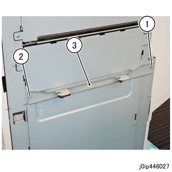
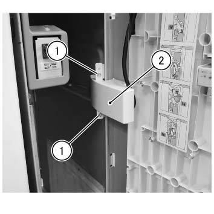
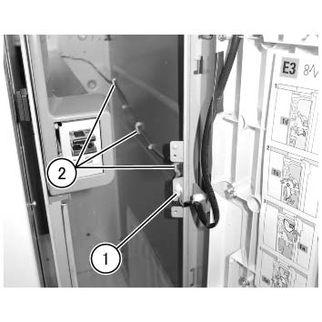
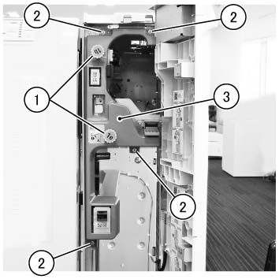
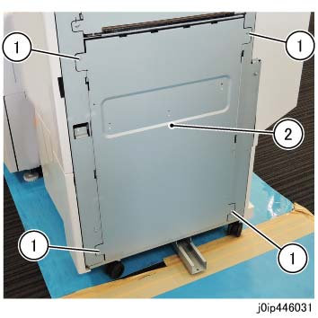
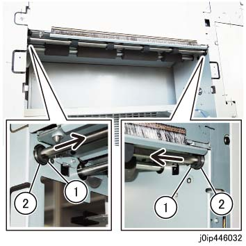
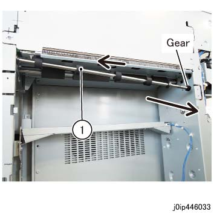
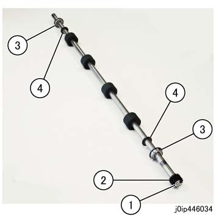

REP 46.6.1 传输 出 辊 
参考 PL:PL 46.6
Removal

在...之后 turning 关闭/脱离 电源开关, 确认 the screen 显示 进入 关闭/脱离 和 the [电源 Saver] button 停止 blinking. 然后, 关闭 the 主 电源 开关, 确认 the [主 电源] 灯 具有 turned 关闭/脱离, 和 然后 关闭 the Breaker 和 unplug 电源插头.
拆卸 纸张 输出 选件 在...之后 the Interposer 单元.
拆卸 对接 板. (图 1)
松开螺钉.
拆卸螺钉.
拆卸 对接 板.

(图 1) ip446027
打开 the 前面 门.
拆卸 连接器 盖板. (图 2)
拆卸螺钉 (Round: x2).
拆卸 连接器 盖板.

(图 2) ipw446001
断开 connectors 在...的两侧 the Relay 连接器, 和 释放 线束 从 卡箍 (x3). (图 3)
断开连接器 在两侧 从 the Relay 连接器.
释放 线束 从 卡箍 (x3).

(图 3) ipw446002
拆卸内盖板. (图 4)
拆卸 旋钮 (1b) 和 旋钮 (1e).
拆卸螺钉 (x4: round).
拆卸内盖板.

(图 4) ipw446003
拆卸 右侧 板. (图 5)
拆卸螺钉 (x4: round).
拆卸 右侧 板.

(图 5) ip446031
拆卸 KL-卡扣 在...之前 和 在...之后 the 传输 出 辊 (inner 侧面), 和 移动 the Nylon 垫圈 和 Ball Bearing inward. (图 6)
拆卸 KL-卡扣 (x2).
移动 the Nylon 垫圈 和 Ball Bearing inward.

(图 6) ip446032
移动 the 传输 出 辊 组件 到 前面, 拉出 齿轮, 和 拆卸 it 到 后面. (图 7)
拆卸 传输 出 辊 组件.

(图 7) ip446033
拆卸 齿轮, Ball Bearing (x2) 和 Nylon 垫圈 (x2) 从 the 传输 出 辊. (图 8)
拆卸E型卡环.
拆卸齿轮.
拆卸 Ball Bearing (x2).
拆卸 Nylon 垫圈 (x2).

(图 8) ip446034